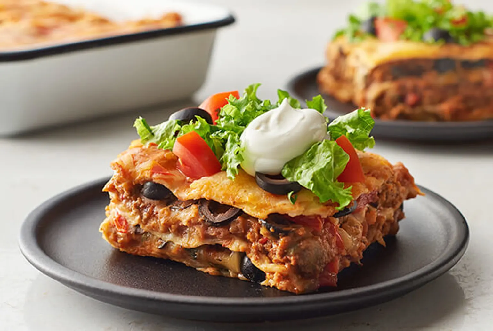

Lasagna

An abomination of fusion -- "Mexican" Lasagna
The recipe will more than likely give you diarrhea, or it might be the best meal of your life.
Either way, may God have mercy on us all.
Ingredients
- 6-8 Old El Paso large tortillas
- 1lb ground beed
- 1 packet Old Paso taco seasoning mix
- 1/3 medium onion, diced
- 1 can (19oz) Old El Paso mild red enchilada sauce
- 1 can (16oz) Old El Paso refried beans, any type
- 1 1/2 cup cheddar or Mexican blend cheese
- 3 small or medim tomatoes, diced
- Cilantro, as desired
- Black olives, as desired
- Sour cream, for topping
- Shredded lettuce, for topping
Steps
- Preheat oven to 350°F. In a large non-stick skillet on stove, cook onions and beef until cooked through.
Remove skillet from heat, drain off grease and stir in taco seasoning. Set aside.
- Cover the bottom of a 9x13-inch baking dish with a thin coat of enchilada sauce. Layer tortilla halves in
the bottom of the pan with the cut (straight) sides facing outward toward edges of pan. Cut pieces of
another tortilla as needed to fill in any gaps and create a solid tortilla layer in the bottom of the pan.
- Continue layering ingredients in the following order, making sure to save enough of each ingredient to form
a second layer: refried beans, enchilada sauce, beef and onion mixture, shredded cheese, diced tomatoes, and
chopped cilantro and black olives (if desired).
- Using equal amounts of ingredients as the first layer, form your second layer in the following order:
tortillas, beans, enchilada sauce, meat and onions, cheese, tomatoes, cilantro and olives.
- Top with a final layer of tortillas, and cover with a thin coating of enchilada sauce and cheese.
- Bake lasagna for 30-45 minutes until cheese is melted and tortillas start to crisp. Serve with sour cream,
lettuce and additional toppings as desired.